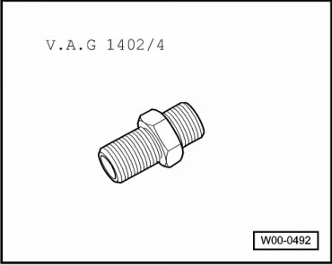
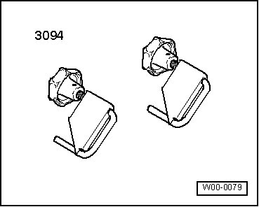
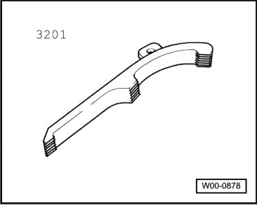
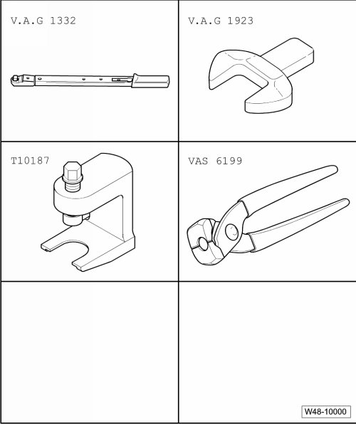

Steering: Tools and Equipment
Special Tools
Special tools, testers and auxiliary items required
• Spanner wrench (3212)
• Ring spanner insert AF 21 (T40087)
• Power steering tester (VAG 1402)
• Adapter (VAG 1402/2)
• Adapter set (VAG 1402/6)
• Adapter (VAG 1402/4)

• Hose clamp (3094)

• Torque wrench (VAG 1331)

• Alignment gauge (3201)

• Torque wrench (VAG 1410)

• Spring type clip pliers (VAS 5024 A)


Special tools, testers and auxiliary items required
• Torque wrench (VAG 1332)
• Box end wrench insert (VAG 1923)
• Ball joint puller (T10187)
• Locking pliers (VAS 6199)